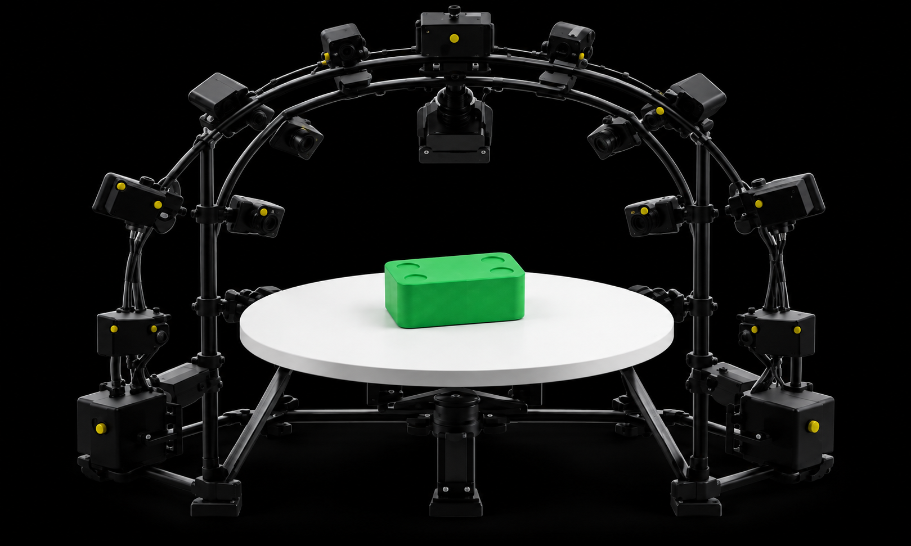
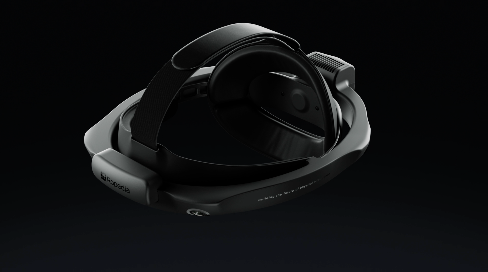

01 · OBJECT ASSET
Metric object mesh

INTRO
 perienceParadigm
perienceParadigmEgoXperience is a full-stack paradigm spanning real-world capture, aligned annotation, unified reconstruction, and benchmarking, turning human experience into world-grounded representations for embodied intelligence.
-Engine-Data-6M-Bench01 · ENGINE
-EngineEgoX-Engine transforms captured experience into eight synchronized modalities: RGB, depth, camera poses, MANO hands, object masks, object 6DoF trajectories, metric object meshes, and task captions.
01 · OBJECT ASSET

02 · EGO CAPTURE

03 · MASK TRACKING
04 · 6DOF
05 · OUTPUT
02 · DATA & BENCHMARK
-Data-6M&Ego-BenchEgoX-Data-6M contains 50 hours and 5.4 million multimodal frames across 270 tasks and 101 objects, spanning workspace, cross-room, and outdoor activities. EgoX-Bench is a quality-controlled one-hour benchmark for joint reconstruction.
TASK COVERAGE
CAPTURE SETTINGS
OBJECT DIVERSITY
03 · MODEL
EgoX extends the VGGT feed-forward reconstruction paradigm from scenes to egocentric video. From monocular observations and a first-frame object mask, it jointly reconstructs the full system in a shared metric world frame with a single forward pass.
 1.2B parameters
1.2B parametersMesh motion is anchored to the first-frame asset pose.
04 · EVALUATION
We evaluate hand, object, camera, and depth reconstruction on HOT3D, EgoX-Bench, HOI4D, and H2O.
05 · CITATION
@article{ji2026egoxperience,
title = {EgoXperience: Learning World-Grounded Egocentric Representations from Human Experience},
author = {Ji, Xinhao and Pang, Hui En and Li, Hao and Hu, Kairui and Wang, Jiner and Sun, Mingze and Cao, Ziang and Dai, Yalun and Luu, Thang and Ma, Qin and Chen, Hongyi and Cao, Yukang and Hong, Fangzhou and Chen, Zhaoxi and Liu, Ziwei},
journal = {Ropedia Technical Report},
year = {2026}
}